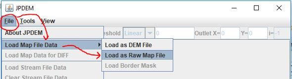
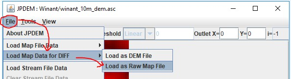
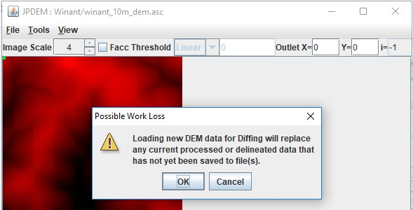
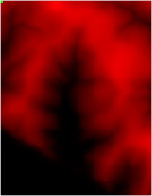
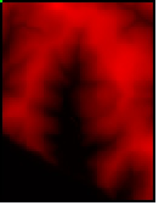
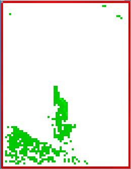
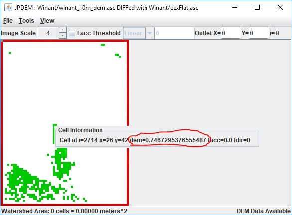
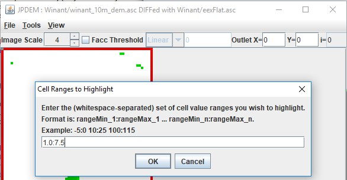
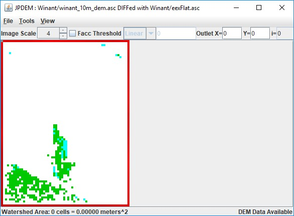

B.8 | JPDEM for Viewing Map Differences
Overview (B.8 - JPDEM Viewing Map Differences)
This tutorial explains how to use JPDEM to compare elevation differences within a DEM before and after it is flat-processed. This quality assurance (QA) step allows users to assess the veracity of
JPDEM's flat-processing procedure. That is, where and to what extent did JPDEM alter the elevations of cells within the DEM? Note that this procedure is but a first step in a QA process that may include comparisons of a flat-processed DEM to other types of data not included in this tutorial. For example, does the flat-processed DEM provide flow routing (Facc values - see Tutorial B.3) consistent with mapped stream locations represented by the National Hydrography Dataset (NHD; https://www.usgs.gov/core-science-systems/ngp/national-hydrography/nhdplus-high-resolution)?
The JPDEM application's File menu contains a "Load Map Data For DIFF" item that provides a way to compare two DEM files across all cells (the maps must have the same dimensions). Although its' abilities are rudimentary relative to comparisons you could perform with true GIS systems (e.g. ESRI's tools) JPDEM's DIFFerencing function is a quick way to - for instance - compare a flat-processed map against the original, raw DEM map. (This is, in fact, precisely the use-case for which the DIFF function was added.)
The DIFF function allows you to load a second DEM .asc file after loading a first .asc file.
The DIFF function replaces the first DEM file's cell data with the difference between the second and the first file's cell data, at every cell. After the DIFF function is completed, JPDEM's cell data contains the
difference values, and the display automatically shifts to the "DEM Difference Image Rendering Mode" -
cells that differ should be relatively easy to spot in this mode.
A DIFF Example
Starting Assumption: e=we have both an original, raw DEM map .asc file, and have already flat- processed that DEM map in JPDEM and saved the results into a second .asc file that is also available.
The DIFF function calculates per cell differences as New Value - Current Value, where "New Value" refers to the file loaded for DIFF. To express the differences between an original .asc DEM file and a flat- processed .asc version of that DEM file such that a positive change in the processed .asc is expressed as a positive value, we should load the original DEM file first, then load the processed DEM file as the DIFF file.
Step 1
Load the original DEM file, using File -> "Load Map File Data" -> "Load as Raw Map File".

It is possible to use "Load as DEM File", but when possible, load the original and the diff file as "raw"
data.
In the "Select DEM File to Load" dialog that opens, find the original raw DEM .asc file, select it, and click "Load File" to load it into JPDEM as the current map data.
Step 2
Load the flat-processed DEM file, using File -> "Load Map Data for DIFF" -> "Load as Raw Map File".

The flat-processed .asc file takes on the role as the "diff" map, the original .asc file is the current map.
Because the DIFF function replaces JPDEM's current map data with difference values, a warning dialog opens before the difference map file finder dialog:

Click OK to proceed to the "Select Raw File to Load for DIFF" dialog and "Load File" load the diff file.
After the cell differences are calculated, JPDEM will contain (and display) the differences for each cell in the grid. The DEM Difference Image Rendering view is active:
diff file cell value < map cell value = RED (darker -> more negative) diff file cell value = map cell value = WHITE diff file cell value > map cell value = GREEN (darker -> more positive) The current Outlet cell = GRAY Highlighted cells = CYANHere is a comparison of our original raw DEM, the flat-processed DEM, and the difference display:
Original DEM (raw loaded) Flat-Processed DEM (raw loaded)


Difference (Flat - Raw) Display

The DIFF display clearly indicates the areas of the map that have been altered by flat processing.
Step 3
After the DIFF function has completed, JPDEM's current map data is the set of cell difference values. You can view an individual cell's values by clicking on a cell with the mouse right-button. The Facc and fdir values, if nonzero, are invalid, but the difference value is listed as the cell's "dem=" value:

Use the View -> "Highlight Specific Cells in Image" -> "Specify Cells by Value Range" function to find
differences within a specific range of difference.
Here we want to find all cells raised between 1.0 and 7.5 meters relative to the original DEM:

The result highlights the specified cells in cyan, rather than the usual "pepto-pink":

As noted in the Overview (page 1), this difference mapping procedure is but a first step in a QA process that may include comparisons of a flat-processed DEM to other types of data not included in this tutorial. For example, does the flat-processed DEM provide flow routing (Facc values - see Tutorial B.3) consistent with mapped stream locations represented by the National Hydrography Dataset (NHD; https://www.usgs.gov/core-science-systems/ngp/national-hydrography/nhdplus-high-resolution)?